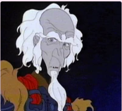
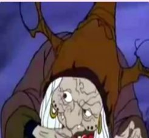
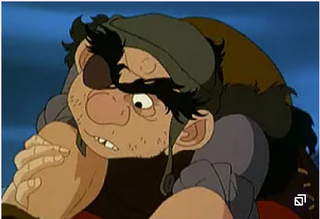

| Antagonists | Names | Their Roles |
|---|---|---|
|  | King Haggard | The king who owns the Red Bull and has captured and trapped all but one unicorn in the ocean. |
|  | Mommy Fortuna, The Witch | The witch who has a traveling freak show carnival where she parades captured harpies and lions. She captures the last unicorn and forces people to see her for what she really is, a unicorn. Ultimately, Mommy Fortuna is killed by the harpy. |
|  | Rukh, the son and servant of Mommy Fortuna | The man who manages the menagerie and tries to hold down Schmedrick to prevent him from freeing the animals. This man is also killed by the harpy. |